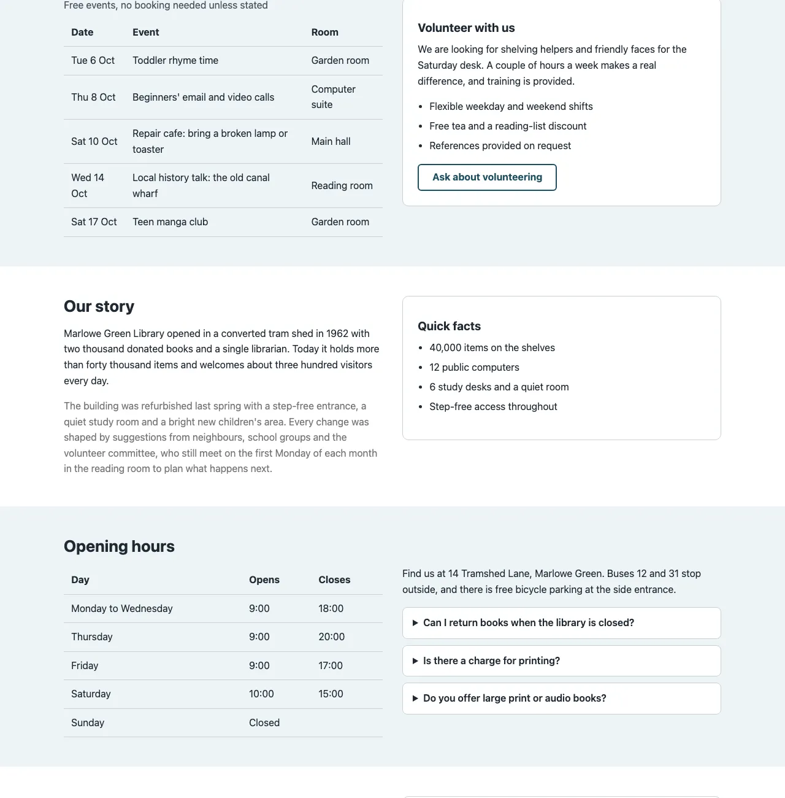

Review queue
Findings the tool could not decide. A person needs to check each one.
Text size and weight unknown118
Select all in group- marlowegreen.example
- kettleandcrumb.example
- fernlea-health.example
- marlowegreen.example
Box estimated by the detector74
Select all in groupIcon colour estimated from pixels46
Select all in groupFocus frames did not settle41
Select all in groupTarget size from a detector box33
Select all in group2 selected
marlowegreen.example/aboutDesktop, 1280 × 800
1.4.3 Contrast (Minimum)
AANeeds review
Text size and weight are unknown, so it is not settled whether the 3:1 or the 4.5:1 threshold applies.

Element crop, 2×
Evidence
- Measured
- 3.8:1
- If large text
- passes 3:1
- If normal text
- fails 4.5:1
- Element
- section#story > p.story
- Source
- Open in report
What would settle it. Check the computed font size and weight of p.story.
JK moveCX? decide
Recently decided
- Confirmed1.4.11 Non-text Contrastfernlea-health.exampleDecided by SA, 11 Oct 14:32
- Not an issue2.5.8 Target Size (Minimum)kettleandcrumb.exampleDecided by SA, 11 Oct 14:32